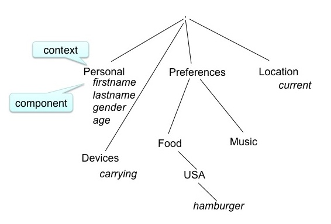

Introduction¶
- User Models as first class citizens
- independant of a particular application
- not just fragments of me locked away in individual systems
- may be distributed over machines I use or in the cloud (could be a personal cloud)
- Scutability and user control
- I own my model
- I control what goes in
- I control what goes out (releasing parts to applications)
- I can see my model in meaningful forms
- as new evidence about an aspect is available an application (evidence source) tells the user model
- the user model accretes the evidence
- a times stamp is added
- the source (registered name of the application) is added
- the evidence type (explicit,...) is added
- the evidence is appended to a list associated with a component of the model
Resolution:
- When an application needs to know information from the model, it asks the model for the value of the required set of components, it asks the model for the required set of components
- At that time
- A filter selects the evidence allowed to the asker
- A resolver function interprets the allowed evidence
- the application may specify the resolver function (from those allowed)
- Or use default
- Can be very simple (eg Point Query) or arbitrarily sophisticated (eg use Bayesian model, ontology.)
- Embrace inconsistency, multiple interpretations!
Scrutability:
- Definition:
Capable of being understood through study and observation, comprehensible. (www.thefreedictionary.com/scrutable)
Understandable upon close examination. (www.tiscali.co.uk/reference/dictionaries/difficultwords/data/d0011288.html)
- the Personis Framework is designed for scrutability
- Why did the system adapt that way?
- Where does the system think I am, and why?
- Historic queries: what location did the system think I was on May 1st 2001?
- what music does the system think I like and why?
- the Personis Framework is designed for scrutability
Model Structure:

- the model is represented as a tree
- we call the branches contexts and the leaves components
Atomic modelled unit - component:
The components of a model contain the evidence associated with that attribute. Example components:
- for classic user model:
- knowledge
- beliefs
- preferences
- for pervasive computing:
- attributes (eg weight, location, sensor reading)
- qualifiers for knowledge and attributes
- goals (eg I want to be able to do 10 chin-ups)
- Operation:
- tell
- evidence is accreted by components after the tell operation

- Operation:
- ask
- A component value is retrieved from the nodel using an ask operation
- the evidence is resolved by a resolver function to give the value
- A component value is retrieved from the nodel using an ask operation
Accretion/Resolution
- values are only calculated from the evidence when they are needed, rather than whenever a new data point (evidence) is received
- the choice of resolver function allows flexibility in the calculated values. For example, location may be resolved as:
- room 123, or “at work”, or latitude/longitude
- historic queries are possible: where was I on a certain date, how have my music preferences changed.